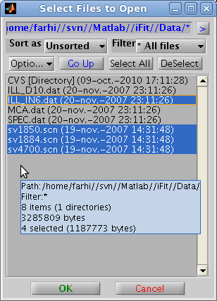
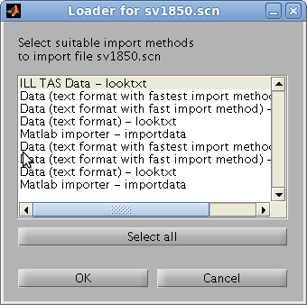
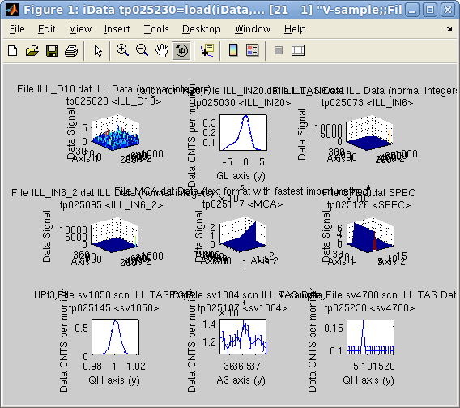
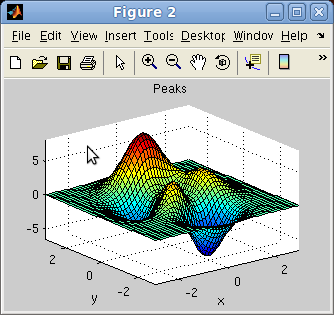

iFit: importing data into objects
- Importing data from a
file (iData,
load)
- Distant files
- Compressed files
- Supported data formats
- Example data files
- Importing directly
from
Matlab variables
- Importing from Matlab
Figures
- How it works
(looktxt, iLoad, iFiles)
Commands we use in this page:
iData, load, methods
In this document we present how to import data as
iData
objetcs from files, variables and figures.
Importing data from a
file (iData,
load)
This is done by converting a file path to an iData
object, or directly
with the
iData/load
method. The ifitpath
points to the iFit library location:
>> a = iData([ ifitpath 'Data/ILL_IN6.dat' ]);
>> a = load(iData, [ ifitpath 'Data/ILL_IN6.dat' ]);
These commands result in the following output, which produce an iData
object:
iLoad: Importing file iFit/Data/ILL_IN6.dat with method ILL Data (normal integers) (looktxt)
looktxt iFit/Data/ILL_IN6.dat --headers --fortran --catenate --fast --binary --makerows=IIII --makerows=FFFF --outfile=/tmp/lk_915264556_CZi4aN
Warning: Data root level renamed as lk_915264556_CZi4aN (started with number).
Output file names are unchanged [looktxt:file_open:1377]
Warning: File 'iFit/Data/ILL_IN6.dat' c='-' [num pos=250] two fortran numbers are touching each other
Warning: File 'iFit/Data/ILL_IN6.dat' c='-' [num pos=2086] two fortran numbers are touching each other
Warning: File 'iFit/Data/ILL_IN6.dat' c='-' [num pos=2086] two fortran numbers are touching each other
Warning: File 'iFit/Data/ILL_IN6.dat' c='-' [num pos=2107] two fortran numbers are touching each other
Warning: File 'iFit/Data/ILL_IN6.dat' c='-' [num pos=2127] two fortran numbers are touching each other
Looktxt: file 'iFit/Data/ILL_IN6.dat': wrote 9 numerical fields into /tmp//lk_915264556_CZi4aN.m
iData: Setting the Signal of tp481575 to the biggest numerical field Data.IIIIIIIIIIIIIIIIIIIIIIIIIIIII_13 with length 131584.
a = iData object:
[Tag] [Dimension] [Title] [Last command] [Label]
tp481575 [257 512] 'File ILL_IN6.dat ILL Data (n...' tp481575=load(iData,...
|
Wildcards (*,?) are supported. The file separator symbol ('/' for
Linux/Unix/MacOSX and '\' for Windows) is automatically adapted to the
system used.
Directory may be imported (and thus all files therein) as well as lists
of files (given as a cell of strings {...})
>> a = iData( [ ifitpath 'Data' ]);
>> a = iData({ [ ifitpath 'Data/*.dat' ] ,...
[ ifitpath 'Data/sv1850.scn' ],...
[ ifitpath 'Data/sv1884.scn' ],...
[ ifitpath 'Data/sv4700.scn' ] });
which return an array of iData objects.
A file selector,
which supports multiple file selection, may be used by
issuing
>> a = iData('')
>> a = load(iData,'')
By default, an analysis of the data file will be done, and the best
importer
method will be used. It is possible to select a prefered method with
e.g.
>> a = load(iData, 'filename', 'HDF5')
>> a = load(iData, 'filename', 'gui'); % a method selector pops-up.
A list of the supported formats is shown below.
Distant files
The specified file names may include URL tags such as
- file://filename
- ftp://filename
- http://filename
were the two latter cases first get a copy of the distant file
(requires write permission), and then import it. A valid Internet
connection is then required, with proper Proxy settings if needed.
Compressed files
Compressed files (ZIP, TAR, GZIP, Z) can also be imported directly, in
which case they are first extracted locally (requires write
permission), and then imported. This extraction mechanism also appl for
distant file.
Supported data formats
In principle, any text based file is loaded transparently (see below). Binary files require a dedicated
wrapper, but many formats are supported. In some case, additional axis
definition specific to the format will be applied.
The list of available methods is stored in the iFit/iFiles/iLoad_ini.m
file,
and can be obtained from the iLoad function
>> config = iLoad('','load config');
a local iLoad.ini
configuration file is stored in the Matlab
Preferences directory, and
then overrides the system default.
The current method list is:
- any Data in text format
- ILL Data (most instruments at the ILL)
- ILL TAS Data (polarized or not)
- SPEC
- McStas (Scan DAT output 1D, 2D monitor, sim file, Sqw table)
- ISIS/SPE tof data
- INX tof data
- Lotus1-2-3 (first spreadsheet) (*.wk1)
- NeXT/SUN (.au) sound
- Microsoft WAVE (.wav) sound
- Audio/Video Interleaved (*.avi)
- NetCDF (*.cdf)
- NetCDF 1.0 (*.nc)
- FITS (*.fits)
- Microsoft Excel (*.xls)
- Image/Picture (*.gif, *.bmp, *.tif, *.jpg, *.png)
- HDF4 (*.hdf4)
- HDF5 (*.hdf5)
- Matlab workspace (*.mat)
- Comma Separated Values (*.csv)
- Numerical single block
- XML (*.xml)
Additional data formats can be added easily, as explained in the iFiles help pages. Some of these formats are
also available for Saving iData objects.
Example data files
The
iFit
package
provides
a
set
of
example
data
files
used
to
demonstrate
the functionalities of the package.
- ILL_D10.dat: some D10
neutron diffractometer measurement at the ILL
- ILL_IN20.dat: some IN20
neutron triple-axis diffractometer at the ILL (GL goniometer scan)
- ILL_IN6.dat: some IN6
neutron time of flight spectrometer at the ILL (liquid water)
- ILL_IN6_2.dat: some IN6
neutron time of flight spectrometer at the ILL (liquid 3He)
- MCA.dat: some Canberra
multichannel analyzer data (from a Brillouin light scattering
spectrometer)
- SPEC.dat: some ESRF data
- sv1850.scn: some IN12
neutron triple-axis diffractometer at the ILL (QH scan)
- sv1884.scn: some IN12
neutron triple-axis diffractometer at the ILL (sample rotation scan)
- sv4700.scn: some IN12
neutron triple-axis diffractometer at the ILL
All of these can be directly accessed with e.g.
>> b = iData([ ifitpath 'Data' filesep filename ]);
>> a = iData([ ifitpath 'Data' ]);
>> subplot(a, 'tight')
The empty iData object ∅ can be obtained from:
>> a=iData
>> a=zeros(iData, size)
Importing directly
from
Matlab variables
A direct import of a Matlab variable is performed with
>> a = iData(variable)
such as
>> a = iData(rand(10))
or
>> a = iData(struct('a',1,'b','a string'))
This works for basically any imput object (structure, numeric array,
cell, ...).
A special syntax is available to import Signal and Axis definitions
with e.g.
>> a = iData(x,y,...c);
imports Signal as 'c' and axes x,y, ... which should then all
be numerical values with 'x' for the columns, 'y' for the rows, 'z' for
the depth, ... that is the plotting Matlab convention used e.g. in surf(x,y,z).
The findobj
method can be used to inquire for all iData objects available in the
workspace/memory:
>> a = findobj(iData);
The zeros method initializes
an empty (or constant) array of objects:
>> a=zeros(iData, size) % create a [size] array of empty objects
>> a=zeros(object, size) % duplicates 'object' as a [size] array
Importing from Matlab
Figures
The direct import method also works fromMatlab figures, when simply
giving a valid Handle Graphics Object to iData:
>> f=figure; peaks;
>> a = iData(f);
The handle can be a figure, a surface, an axis, a line, ...
How it works
(looktxt, iLoad, iFiles)
The file names to import are sent to the iFiles/iLoad
routine,
which
scans
the
file
and
searches
for
the
file
extension
and
patterns
in
the
file
contents
(in
the
case
of
text
files)
in
order to
identify the proper importation method to use.
The text files are processed with the looktxt parser (refer to http://looktxt.sourceforge.net)
and
translated
into
a
Matlab
script
which
is
then
read
into
the
workspace.
Binary
files
are
read
with
dedicated
read
routines,
as
it
is
usually
not
possible
to
interpret correctly the file structure ab-initio.
The resulting Matlab variable is a structure, which holds a Data field with all numerical
blocks from the initial file, and a Header
field which holds any preceding comment strings for each field. Data
fields are automatically named from keywords found just before the
numerical blocks. These steps are performed through the iFiles/iLoad wrapper.
The structures are then converted into iData
objects, and optionally some data format specific post-processing
scripts are applied, as described in iFiles/iLoad_ini.m
Refer to the iFiles documentation to learn
how to customize load methods and import filters.
E.
Farhi - iFit/iData loading data -
$Date: 2011-02-08 16:06:31 $ $Revision: 1.9 $
- back to
Main
iFit
Page